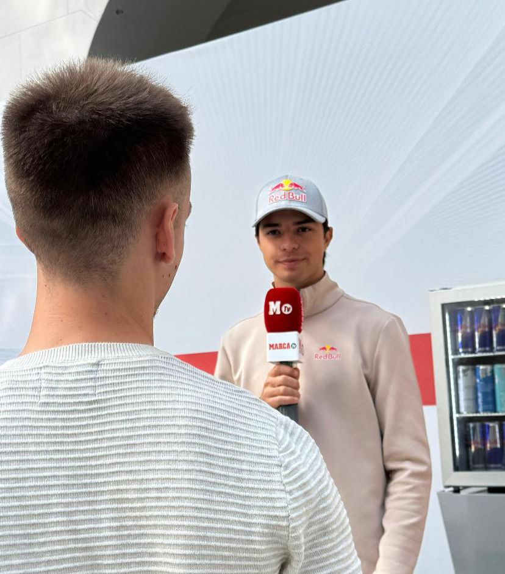
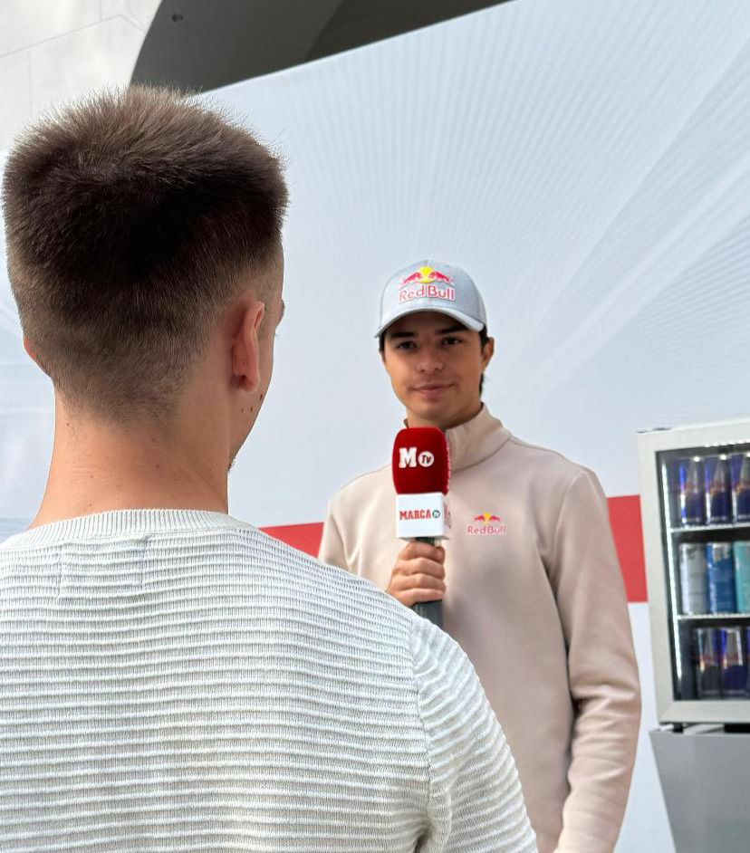
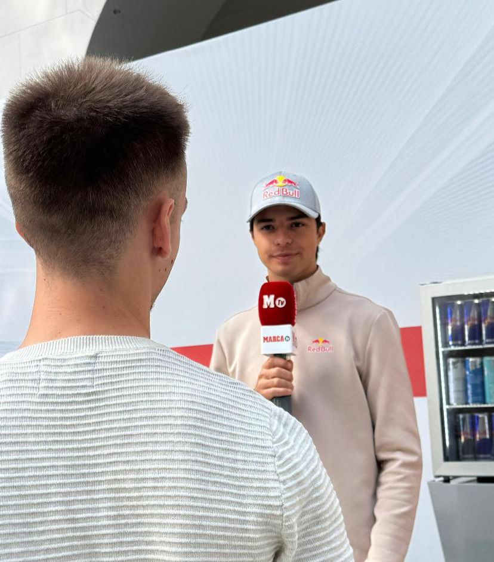
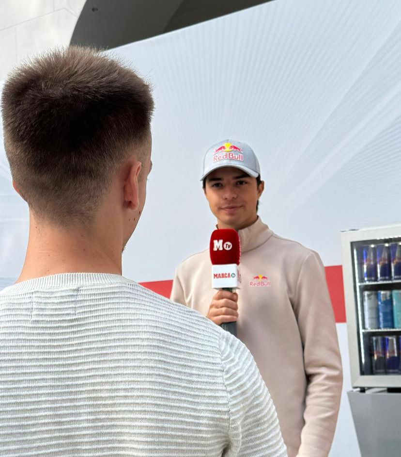

 

 MARCA
MARCA
Me he subido al Polestar 5: “El nuevo buque insignia de la marca sueca que será una gran amenaza para el Porsche Taycan”

Aston Martin enseña al mundo el AMR26, el coche con el que Newey quiere volver a convertir a Fernando Alonso en campeón del mundo de Fórmula 1

Resumen del GP de Austria de Fórmula 1: Lando Norris gana en casa de Red Bull, Alonso es séptimo y Sainz abandona antes de empezar
GUÍA MARCA
Muy contento de participar en la creación de la guía de Marca 25/26.
Cargando últimas columnas...
Trabajo Fin de Máster
Proyecto de 'Guía de los campeones de la Champions League 1992-2024'
Un periodista deportivo especializado en distintos ámbitos. Desde que empecé en mis prácticas universitarias en el programa de televisión ‘Más que Coches’, me especialicé en el mundo del motor, y poco a poco he ido creciendo en este tanto en Marca como en Autobild cubriendo todo tipo de deportes de motor y noticias sobre los últimos modelos de todas las firmas. Además he podido escribir en el diario más leído del país sobre deportes como fútbol o pádel. Especialmente sobre el primero, siendo parte de la creación de la última edición de la Guía Marca.